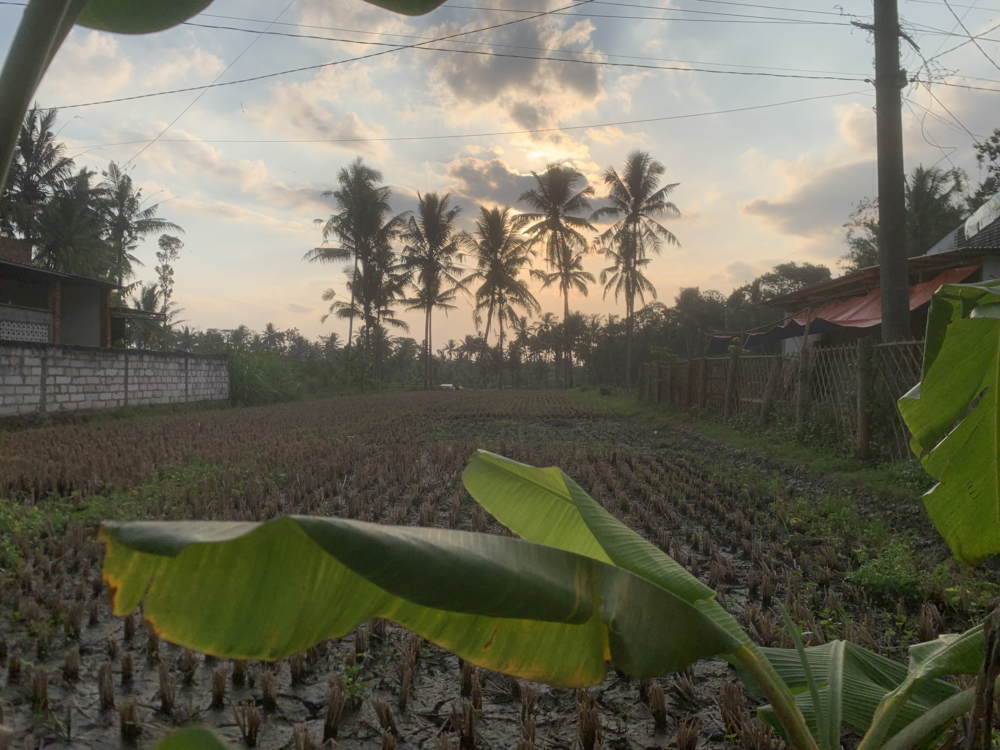
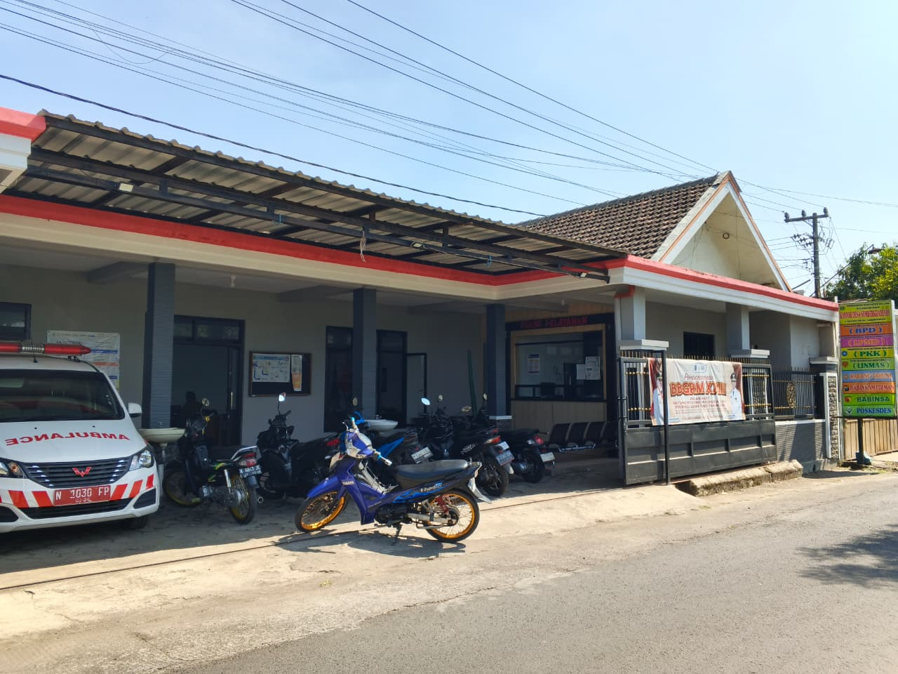
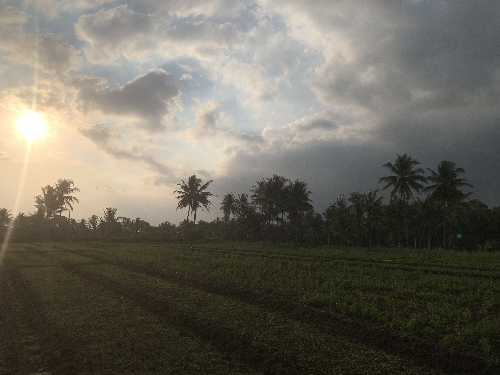
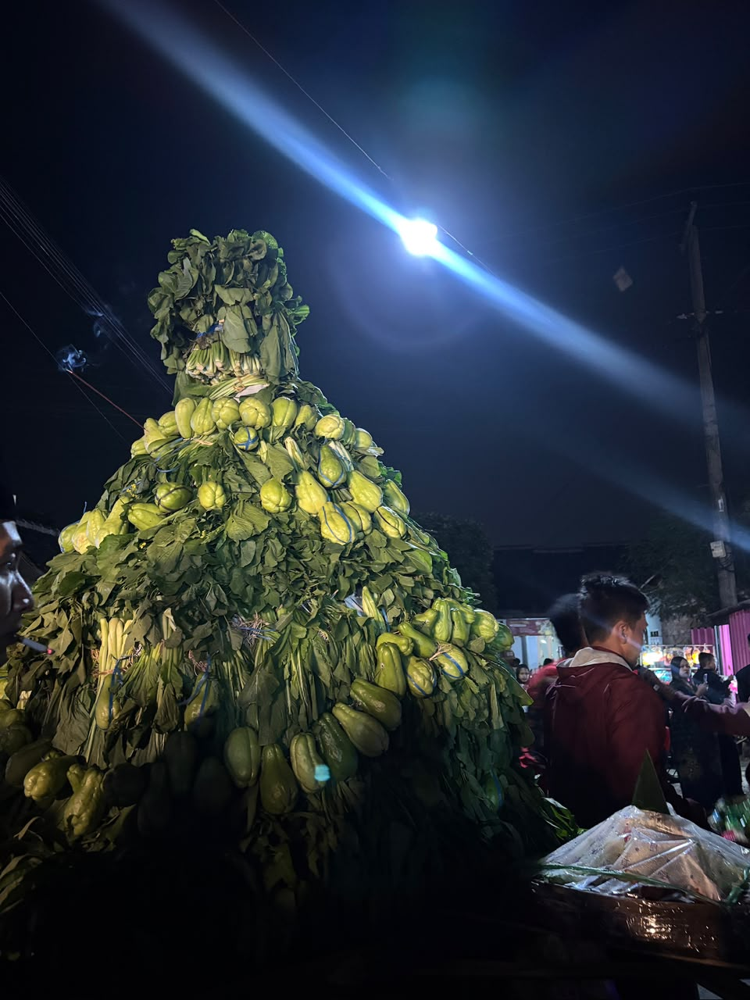
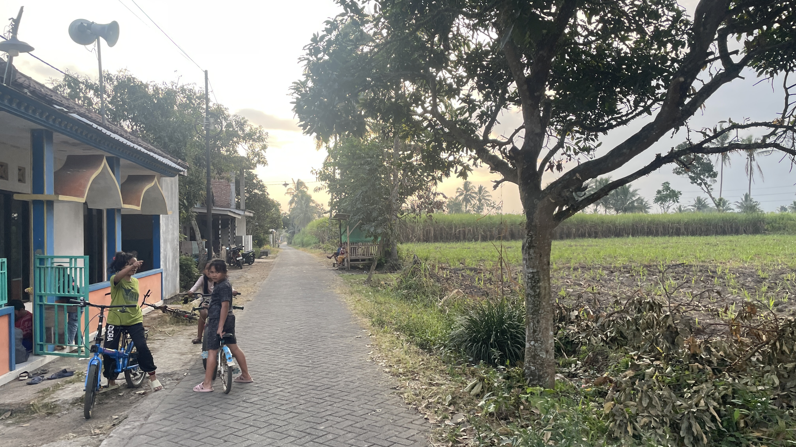
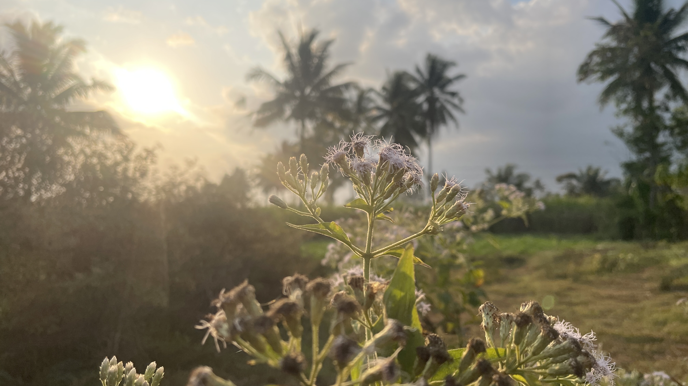

Dokumentasi kegiatan masyarakat, pembangunan desa, budaya, serta keindahan alam Desa Sumberkradenan.
Dokumentasi
Tahun Kegiatan
Dusun
Kegiatan Warga

Berbagai dokumentasi mengenai kehidupan masyarakat, kegiatan pemerintahan, budaya, hingga potensi alam desa.
Jelajahi Galeri



